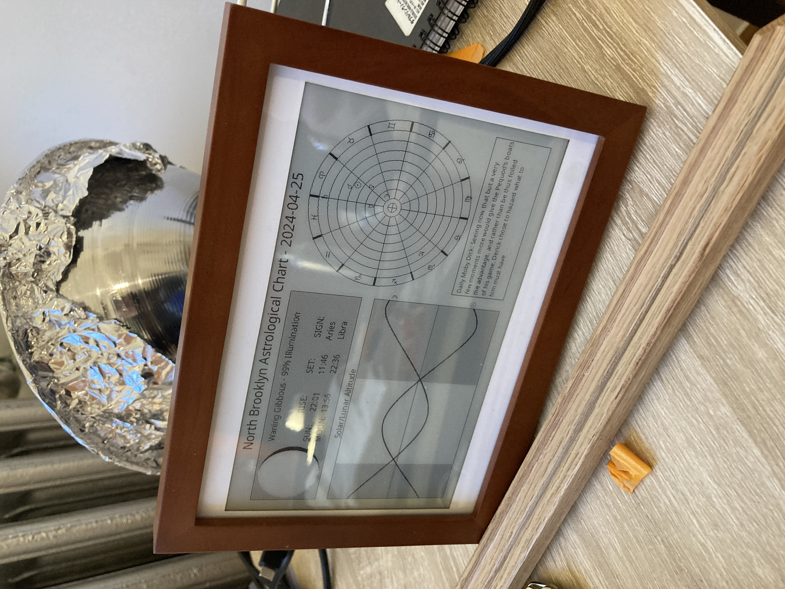
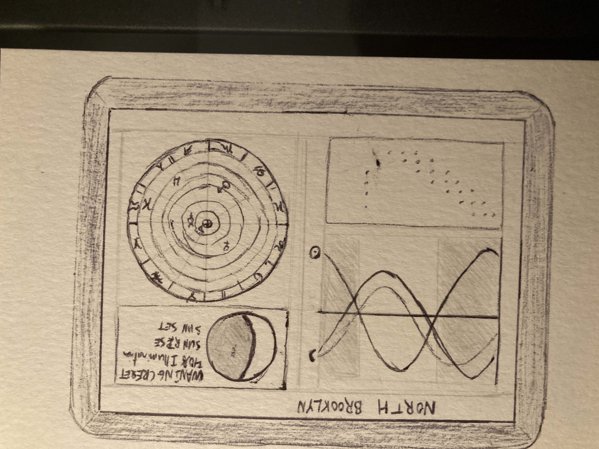
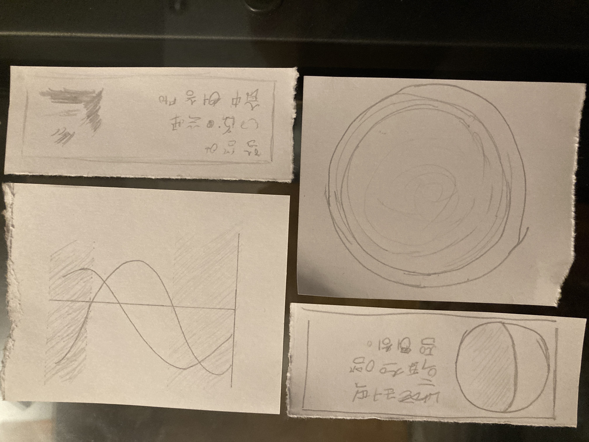
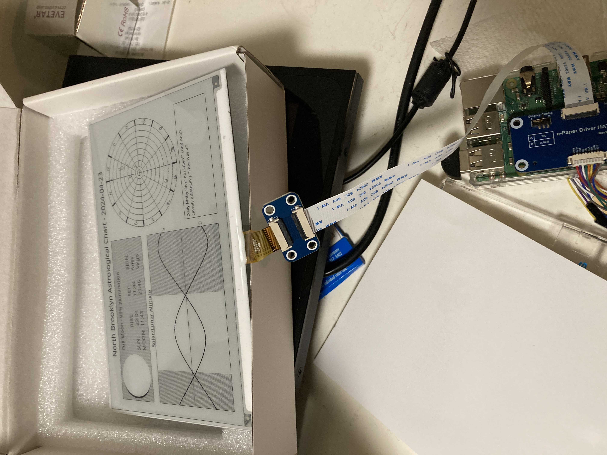

An Astrological E-ink Display
Modeling the heavens has been one of the main preoccupations of humanity since as far back as anyone kept records. There is something wonderful about knowing where the sun and the moon and the planets are right now. While there are obviously numerous mobile and internet applications that will tell you the phase of the moon, the time of sunrise, and whether mercury is in retrograde. It is a lot of extra work to pull all this together in the same space. We all use our phones too much anyway, and cramming more of our minds into the same small piece of glass feels like it can't be good for us. I thought that it would be a very nice to have a dedicated display that shows the essentials of the heavens that can just sit on a desk as an unobtrusive piece of furniture like a clock.
There is a long tradition of trying to make clocks that model the full solar system. And some people argue that this is the older form of computer. But with modern hardware and software, we can build the real thing for a very reasonable budget. I thought this would make a nice birthday present, which gave a fixed and immovable deadline. What started out as a simple project ended up taking up a lot of time that I didn't really have to spare. But the end result came together really nice, so I wanted to make a quick write up to discuss the product design process.
I wanted this to be something quiet and muted. Having previously given the recipient of this gift a rather bright video display, it felt like adding more light sources onto their wall would be excessive. There is probably some larger point about calming technology, but I had the idea of how it would be nice to have a geophysical or astrophysical observatory as a piece of furniture to give you a greater sense of awareness of your surroundings. I have been a fan of e-ink displays for a while, and this felt like a product where the slow and physical look of e-ink would be perfect.
With the idea in mind, this all started with a paper sketch. Some people really like Figma, and while is great for collaboration, I find that nothing beats paper as a creative medium. I started with some basic sketches. After finding the core elements that I wanted to display, I cut the paper up and started moving the pieces around to physically see the layout.
With a sketch in hand, I felt like I had a solid concept. I then started specing components online. I knew that there were relatively affordable eink displays that could be powered by a raspberry pi. Since I already had a few of those sitting around this felt like the way to go. I also purchased a few extra componets like an external clock, and a solar charger that were ultimately abandoned due to issues getting the wiring setup properly.

The initial software work was pretty quick. Which is good because I tend to think that the way to make a good design is to sit withit for a while and iterate. I had thought that I might need to calculate all the positions of the planets by hand, but I was able to find some python libraries that did all of calculations. The bigger task was building a graphical layout in python (not exactly know for this).
Getting the e-ink display running proved to be a bigger challenge than I had initially anticipated. Waveshare's instructions are sufficient, but I would not say that they are easy to follow. Any mistake and you are pretty much hosed. Of all the mistakes, the biggest one was not closely reading the list of Raspberry Pi's that this would run on. As luck would have it I tried two of the wrong ones first, and only after spedning far more time than I would care to think about did I manage to read this list of supported devices and plug that it.
Once this had succeeded, it was more or less a straight path to setting up a cronjob to run every day and putting the device inside of a picture frame.

Housing the display was relatively pleasant compared to debuging a pile of electronics. I used a 7x5 inch photo display that I found around the corner. Unfortunately the 3:2 frame was not a perfect fit for the 4:3 e-ink display nicely. I was able to borrow access to a Glowforge and cut out a strip of card stock to pad the edges.
With this the product was complete. I had to remove some features along the way to get it over the finish line. And a last minute patch was needed to square the sidereal and tropical definitions of the Zodiac (don't try to tell a Taurus that they are actually an Aires).
Getting compoentns Getting a frame Laser Cutting soem padding Installing everythinbg Getthing things running on E-ink Some challenges with astronmy Timezones, Tropical/Sidereal.